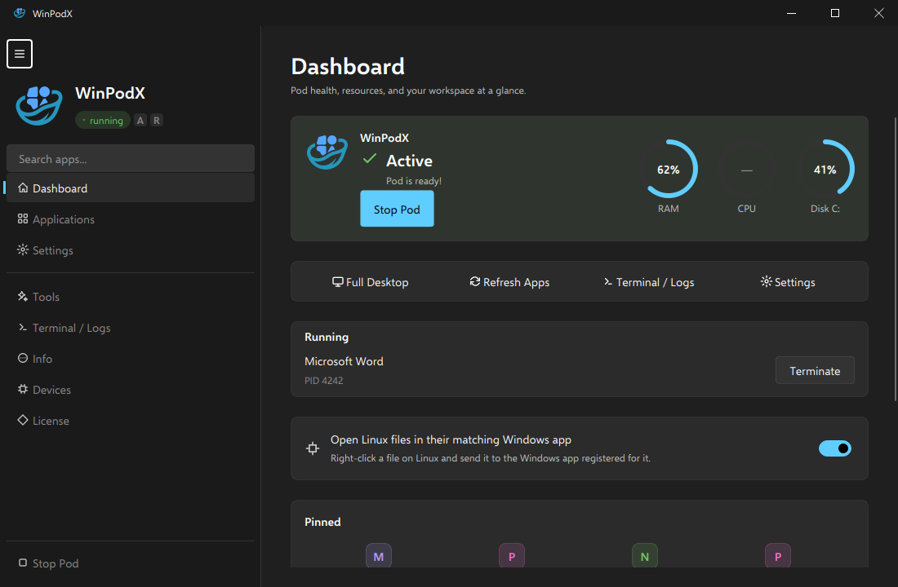

Click an app.
Word opens. That's it.
Native Linux windows for every Windows app — real icons, real
WM_CLASS, pin-to-taskbar. FreeRDP RemoteApp + dockur/windows.
Zero config.
{kind=link}

How it works
No manual VM wrangling. WinPodX provisions everything on the first app click.
Install & setup
One command pulls a Windows container (dockur/windows) in rootless Podman, runs an unattended Windows install, and applies the RemoteApp + agent setup.
Apps auto-discovered
By default, WinPodX adds only the apps your Windows Start Menu actually shows — mirrored into matching folder sub-groups — each as a Linux .desktop entry with its real icon. Opt in with desktop.full_app_scan to also sweep the registry App Paths, UWP/MSIX, Chocolatey and Scoop.
Click & launch
Click the app like any native one. It opens in its own Linux window via FreeRDP RemoteApp — pinnable, alt-tabbable, file-associated. No full desktop.
Why not just RDP, a VM, or Wine?
WinPodX keeps real Windows compatibility while feeling native.
| WinPodX | Full-screen RDP | Bare VM | Wine | |
|---|---|---|---|---|
| Per-app native windows | ✓ | desktop only | desktop only | ✓ |
| Real Windows compatibility | ✓ | ✓ | ✓ | partial |
| Taskbar icons + file assoc. | ✓ | ✕ | ✕ | limited |
| One-command setup | ✓ | manual | manual | per-app |
| Linux apps in Windows menu | ✓ | ✕ | ✕ | ✕ |
What it does
Each Windows app becomes its own Linux window — pinnable, alt-tabbable, file-associated, both directions.
Seamless app windows
- RemoteApp (RAIL) renders each app as a native window — no desktop
- Per-app taskbar icons via
WM_CLASSmatching - Double-click
.docx→ Word opens; open a second file and it lands in the already-running app - Click a
mailto:link → Outlook opens; app schemes (slack:,vnc:) route to the right Windows app (auto-detected) - Multi-session RDP: up to 25 independent sessions
- Multi-monitor RAIL by default — drag a window to a second screen, keep working
Reverse-open
- Linux apps appear in the Windows "Open with…" menu, by default
- Launch a Linux app on its own from the Windows Start Menu's Linux Apps folder — no file needed
- Correct per-app icons in both Windows chooser dialogs
- Round-trips the file open back to host
xdg-open - Auto-discovers host apps + MIME from freedesktop standards
- Opens Windows-side files too — guest
C:mounts on the host, edits save back (SMB + kio-fuse, KDE)
Zero-config launch
- First click auto-provisions config, container, desktop entries
- First-boot discovery adds your Start Menu apps with their real icons
- Start-Menu-only by default; opt-in full scan adds registry App Paths, all UWP/MSIX, Chocolatey, Scoop
- Backends: Podman (default), Docker, manual RDP
Peripherals & sharing
- Clipboard (text + images), sound, printers — on by default
- Home directory shared as
\\tsclient\home - USB drives shared in-session; live USB device passthrough
- Smart DPI scaling auto-detected from your desktop
Automation & resilience
- Auto suspend / resume; optional pod auto-start on login
- Opt-in idle auto-stop fully stops the VM and frees its RAM
- Self-heals a stalled RDP guest (UNRESPONSIVE → recover)
- Password auto-rotation; Windows disk auto-grow
- Health checks + auto-fix via
winpodx doctor --fix
Lean & private
- Near-zero Python deps — stdlib only on 3.11+
- No telemetry, ever
- Multilingual UI (en / ko / zh / ja / de / fr / it)
- Windows 11 Settings-style desktop app: Dashboard, Applications, Settings, Tools, Terminal, Info, Devices, and tray
Works on
One-line install across the major Linux families.